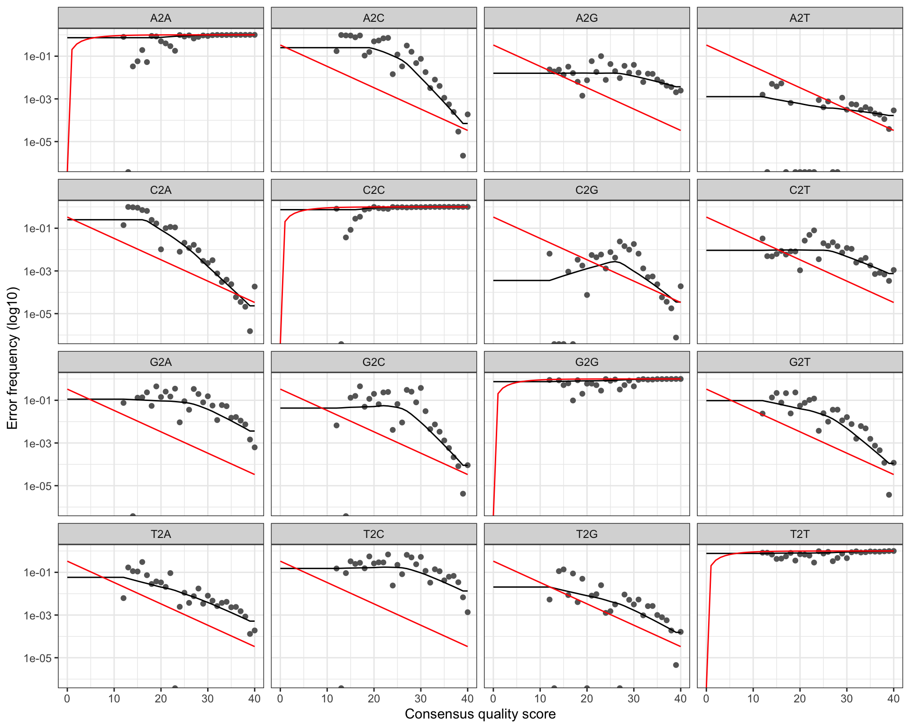
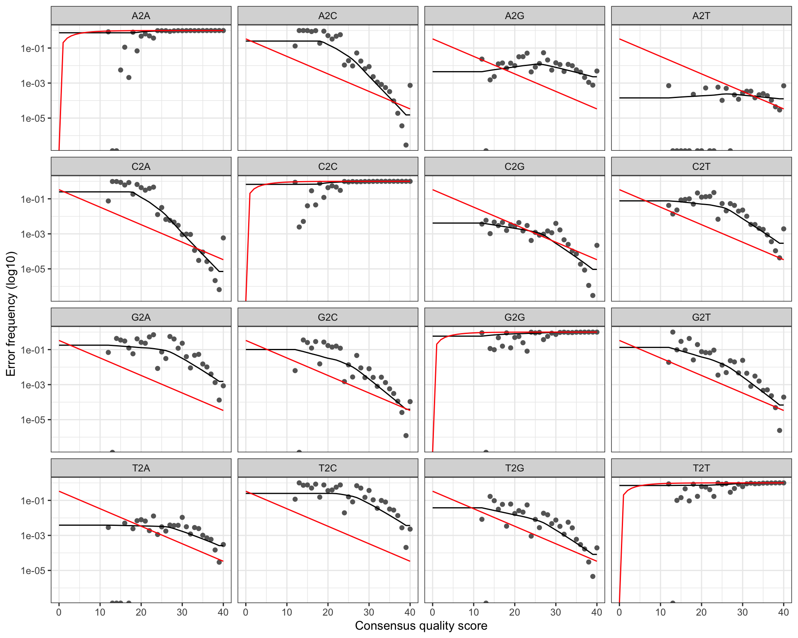

# Option 4: recommended for NextSeq 2000 / NovaSeq binned quality scores
loessErrfun_mod4 <- function(trans) {
qq <- as.numeric(colnames(trans))
est <- matrix(0, nrow = 0, ncol = length(qq))
for (nti in c("A", "C", "G", "T")) {
for (ntj in c("A", "C", "G", "T")) {
if (nti != ntj) {
errs <- trans[paste0(nti, "2", ntj), ]
tot <- colSums(trans[paste0(nti, "2", c("A", "C", "G", "T")), ])
rlogp <- log10((errs + 1) / tot) # +1 pseudocount
rlogp[is.infinite(rlogp)] <- NA
df <- data.frame(q = qq, errs = errs, tot = tot, rlogp = rlogp)
# Locally-linear loess with log-count weights — the key change for binned data
mod.lo <- loess(rlogp ~ q, df,
weights = log10(tot),
degree = 1,
span = 0.95)
pred <- predict(mod.lo, qq)
# Extend predictions to quality levels with no observations
maxrli <- max(which(!is.na(pred)))
minrli <- min(which(!is.na(pred)))
pred[seq_along(pred) > maxrli] <- pred[[maxrli]]
pred[seq_along(pred) < minrli] <- pred[[minrli]]
est <- rbind(est, 10^pred)
}
}
}
# Clamp to a sensible range
MAX_ERROR_RATE <- 0.25
MIN_ERROR_RATE <- 1e-7
est[est > MAX_ERROR_RATE] <- MAX_ERROR_RATE
est[est < MIN_ERROR_RATE] <- MIN_ERROR_RATE
# Enforce monotonicity: error rate at quality X must be ≥ error rate at quality 40
estorig <- est
est <- est %>%
data.frame() %>%
mutate(across(everything(), ~ if_else(. < X40, X40, .))) %>%
as.matrix()
rownames(est) <- rownames(estorig)
colnames(est) <- colnames(estorig)
# Build the full 4×4 error matrix (including self-transitions)
err <- rbind(
1 - colSums(est[1:3, ]), est[1:3, ],
est[4, ], 1 - colSums(est[4:6, ]), est[5:6, ],
est[7:8, ], 1 - colSums(est[7:9, ]), est[9, ],
est[10:12, ], 1 - colSums(est[10:12, ])
)
rownames(err) <- paste0(rep(c("A", "C", "G", "T"), each = 4), "2",
c("A", "C", "G", "T"))
colnames(err) <- colnames(trans)
return(err)
}4 Error Rate Modelling
4.1 What are error rates?
Every sequencing instrument makes mistakes. A base may be called as A when it was actually C. The probability of each such substitution depends on the quality score reported for that position: a base called at Q30 has a 1-in-1000 chance of being wrong, while a Q20 base has a 1-in-100 chance.
DADA2’s denoising algorithm uses a parametric error model — learned from the data itself — to estimate the true frequency of each type of error at each quality score. This model is then used to distinguish genuine biological variants from PCR/sequencing errors.
4.2 The problem with binned quality scores
The standard DADA2 error estimation assumes that error rates vary continuously and monotonically with the reported quality score: higher quality → lower error rate. This assumption holds well for MiSeq data.
NextSeq 2000 and NovaSeq use a 2-colour chemistry that reports quality scores in a small number of discrete levels (typically Q2, Q12, Q23, Q37). This binning creates a mismatch: many bases with very different true error rates share the same quality label, and some quality levels may have zero or very few observations. The default loessErrfun fails to fit a smooth, monotone curve through such sparse, clustered data.
The solution is to use a modified loess fitting function that:
- Adds a pseudocount to avoid log(0) issues
- Adjusts the loess bandwidth and weighting
- Enforces monotonicity explicitly after fitting
We provide four variants (Options 1–4). Option 4 is recommended for NextSeq 2000 and NovaSeq data and is the one used in this tutorial.
4.3 The four error model variants
All four variants share the same overall structure. The differences are in how loess() is called:
| Option | Span | Degree | Weights | Best for |
|---|---|---|---|---|
| 1 | 2 (very wide) | default (2) | log10(tot) | Heavily binned data |
| 2 | default | default (2) | tot (counts) | Standard MiSeq-like |
| 3 | default | default (2) | log10(tot) | Intermediate |
| 4 | 0.95 | 1 | log10(tot) | NextSeq / NovaSeq ✓ |
Option 4 uses degree = 1 (locally linear rather than locally quadratic) and a wide span = 0.95, which prevents over-fitting to the sparse quality bins and produces smooth, monotone error curves.
4.4 Define the error model functions
NoteOptions 1, 2, and 3 (click to expand)
These are provided for comparison. If you are processing MiSeq data you may find Option 2 (standard weights) or Option 3 (log-weight without degree/span change) more appropriate.
loessErrfun_mod1 <- function(trans) {
qq <- as.numeric(colnames(trans))
est <- matrix(0, nrow = 0, ncol = length(qq))
for (nti in c("A","C","G","T")) {
for (ntj in c("A","C","G","T")) {
if (nti != ntj) {
errs <- trans[paste0(nti,"2",ntj),]
tot <- colSums(trans[paste0(nti,"2",c("A","C","G","T")),])
rlogp <- log10((errs+1)/tot)
rlogp[is.infinite(rlogp)] <- NA
df <- data.frame(q=qq, errs=errs, tot=tot, rlogp=rlogp)
mod.lo <- loess(rlogp ~ q, df, weights=log10(tot), span=2)
pred <- predict(mod.lo, qq)
maxrli <- max(which(!is.na(pred))); minrli <- min(which(!is.na(pred)))
pred[seq_along(pred)>maxrli] <- pred[[maxrli]]
pred[seq_along(pred)<minrli] <- pred[[minrli]]
est <- rbind(est, 10^pred)
}
}
}
MAX_ERROR_RATE <- 0.25; MIN_ERROR_RATE <- 1e-7
est[est>MAX_ERROR_RATE] <- MAX_ERROR_RATE; est[est<MIN_ERROR_RATE] <- MIN_ERROR_RATE
estorig <- est
est <- est %>% data.frame() %>%
mutate(across(everything(), ~ if_else(. < X40, X40, .))) %>% as.matrix()
rownames(est) <- rownames(estorig); colnames(est) <- colnames(estorig)
err <- rbind(1-colSums(est[1:3,]), est[1:3,], est[4,], 1-colSums(est[4:6,]),
est[5:6,], est[7:8,], 1-colSums(est[7:9,]), est[9,],
est[10:12,], 1-colSums(est[10:12,]))
rownames(err) <- paste0(rep(c("A","C","G","T"),each=4),"2",c("A","C","G","T"))
colnames(err) <- colnames(trans)
return(err)
}
loessErrfun_mod2 <- function(trans) {
qq <- as.numeric(colnames(trans))
est <- matrix(0, nrow = 0, ncol = length(qq))
for (nti in c("A","C","G","T")) {
for (ntj in c("A","C","G","T")) {
if (nti != ntj) {
errs <- trans[paste0(nti,"2",ntj),]
tot <- colSums(trans[paste0(nti,"2",c("A","C","G","T")),])
rlogp <- log10((errs+1)/tot)
rlogp[is.infinite(rlogp)] <- NA
df <- data.frame(q=qq, errs=errs, tot=tot, rlogp=rlogp)
mod.lo <- loess(rlogp ~ q, df, weights=tot)
pred <- predict(mod.lo, qq)
maxrli <- max(which(!is.na(pred))); minrli <- min(which(!is.na(pred)))
pred[seq_along(pred)>maxrli] <- pred[[maxrli]]
pred[seq_along(pred)<minrli] <- pred[[minrli]]
est <- rbind(est, 10^pred)
}
}
}
MAX_ERROR_RATE <- 0.25; MIN_ERROR_RATE <- 1e-7
est[est>MAX_ERROR_RATE] <- MAX_ERROR_RATE; est[est<MIN_ERROR_RATE] <- MIN_ERROR_RATE
estorig <- est
est <- est %>% data.frame() %>%
mutate(across(everything(), ~ if_else(. < X40, X40, .))) %>% as.matrix()
rownames(est) <- rownames(estorig); colnames(est) <- colnames(estorig)
err <- rbind(1-colSums(est[1:3,]), est[1:3,], est[4,], 1-colSums(est[4:6,]),
est[5:6,], est[7:8,], 1-colSums(est[7:9,]), est[9,],
est[10:12,], 1-colSums(est[10:12,]))
rownames(err) <- paste0(rep(c("A","C","G","T"),each=4),"2",c("A","C","G","T"))
colnames(err) <- colnames(trans)
return(err)
}
loessErrfun_mod3 <- function(trans) {
qq <- as.numeric(colnames(trans))
est <- matrix(0, nrow = 0, ncol = length(qq))
for (nti in c("A","C","G","T")) {
for (ntj in c("A","C","G","T")) {
if (nti != ntj) {
errs <- trans[paste0(nti,"2",ntj),]
tot <- colSums(trans[paste0(nti,"2",c("A","C","G","T")),])
rlogp <- log10((errs+1)/tot)
rlogp[is.infinite(rlogp)] <- NA
df <- data.frame(q=qq, errs=errs, tot=tot, rlogp=rlogp)
mod.lo <- loess(rlogp ~ q, df, weights=log10(tot))
pred <- predict(mod.lo, qq)
maxrli <- max(which(!is.na(pred))); minrli <- min(which(!is.na(pred)))
pred[seq_along(pred)>maxrli] <- pred[[maxrli]]
pred[seq_along(pred)<minrli] <- pred[[minrli]]
est <- rbind(est, 10^pred)
}
}
}
MAX_ERROR_RATE <- 0.25; MIN_ERROR_RATE <- 1e-7
est[est>MAX_ERROR_RATE] <- MAX_ERROR_RATE; est[est<MIN_ERROR_RATE] <- MIN_ERROR_RATE
estorig <- est
est <- est %>% data.frame() %>%
mutate(across(everything(), ~ if_else(. < X40, X40, .))) %>% as.matrix()
rownames(est) <- rownames(estorig); colnames(est) <- colnames(estorig)
err <- rbind(1-colSums(est[1:3,]), est[1:3,], est[4,], 1-colSums(est[4:6,]),
est[5:6,], est[7:8,], 1-colSums(est[7:9,]), est[9,],
est[10:12,], 1-colSums(est[10:12,]))
rownames(err) <- paste0(rep(c("A","C","G","T"),each=4),"2",c("A","C","G","T"))
colnames(err) <- colnames(trans)
return(err)
}4.5 Learn error rates from the data
learnErrors() processes a subset of reads (here, up to 10^10 bases, effectively all of them) to estimate per-cycle, per-substitution error rates. This is the most computationally demanding step of the pipeline.
The results are cached to disk so that re-rendering the document does not require re-running this step.
errF_file <- file.path(path_precomp, "errF.rds")
errR_file <- file.path(path_precomp, "errR.rds")
if (!file.exists(errF_file)) {
message("Learning forward error model (this may take several minutes)...")
errF <- learnErrors(filtFs, multithread = TRUE, nbases = 1e10,
errorEstimationFunction = loessErrfun_mod4, verbose = TRUE)
saveRDS(errF, errF_file)
} else {
message("Loading pre-computed forward error model.")
errF <- readRDS(errF_file)
}1404564200 total bases in 5402170 reads from 29 samples will be used for learning the error rates.
Initializing error rates to maximum possible estimate.
selfConsist step 1 .............................
selfConsist step 2
selfConsist step 3
selfConsist step 4
selfConsist step 5
selfConsist step 6
selfConsist step 7
Convergence after 7 rounds.if (!file.exists(errR_file)) {
message("Learning reverse error model (this may take several minutes)...")
errR <- learnErrors(filtRs, multithread = TRUE, nbases = 1e10,
errorEstimationFunction = loessErrfun_mod4, verbose = TRUE)
saveRDS(errR, errR_file)
} else {
message("Loading pre-computed reverse error model.")
errR <- readRDS(errR_file)
}1350542500 total bases in 5402170 reads from 29 samples will be used for learning the error rates.
Initializing error rates to maximum possible estimate.
selfConsist step 1 .............................
selfConsist step 2
selfConsist step 3
selfConsist step 4
selfConsist step 5
selfConsist step 6
selfConsist step 7
Convergence after 7 rounds.4.6 Visualise the error model
A good error model should show:
- Black dots (observed error rates) closely following the black line (fitted model)
- Red line (expected error rates based on the nominal quality score) close to the fitted line
- Error rates that decrease monotonically as quality increases
plotErrors(errF, nominalQ = TRUE)
plotErrors(errR, nominalQ = TRUE)
WarningWhat a bad error model looks like
If the fitted line (black) diverges strongly from the observed points (dots), or if the curve is not monotone decreasing, the error model is unreliable. In that case, try a different option (1–3). Binned quality data often show clusters of points at a few quality levels with large gaps in between — Option 4 handles this best.